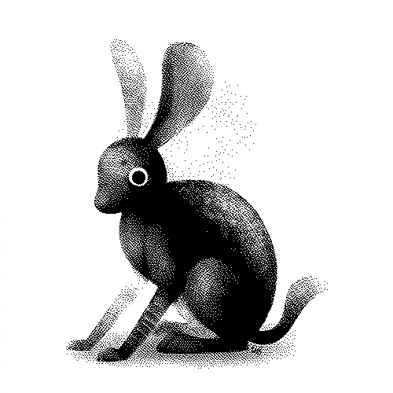
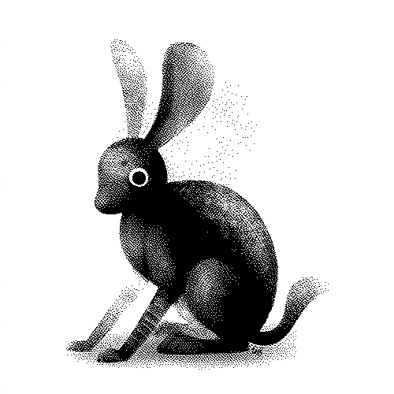
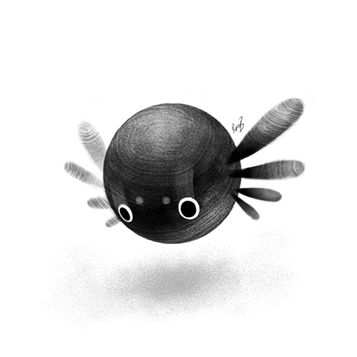
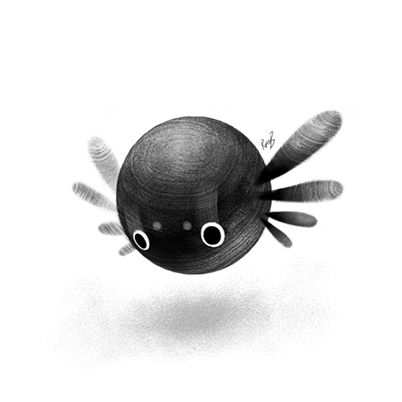
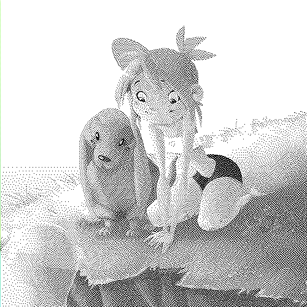
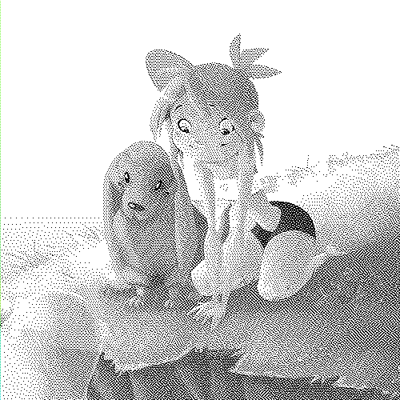

Desert Tales
Wiktopher is a fiction story published online. The story follows two characters, Lupin and Eka, as they navigate the barren lands of the Soronan Desert after an accident that leaves Lupin without home or family, they seek food, company and supplies while living day-to-day.
READ WIKTOPHERThe novel has a number of added content (glossary) that permits the reader to learn more of the world and its people.
Fauna


 

 


History of project
The story of Wiktopher is an elaboration of a short film I did in 2008 called Uno. This project was supposed to expand into a comic, which included many of the Wiktopher characters like Eka, Uno, Zucca, Lupin and Thirteen.
I produced a lot of exploratory art for the project but the comic was never completed. Here is some art from that time, that may serve to give some context for the current version of Wiktopher:


 
